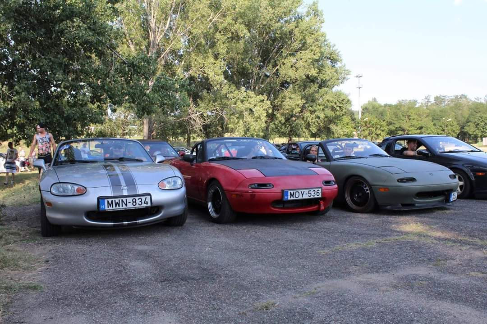
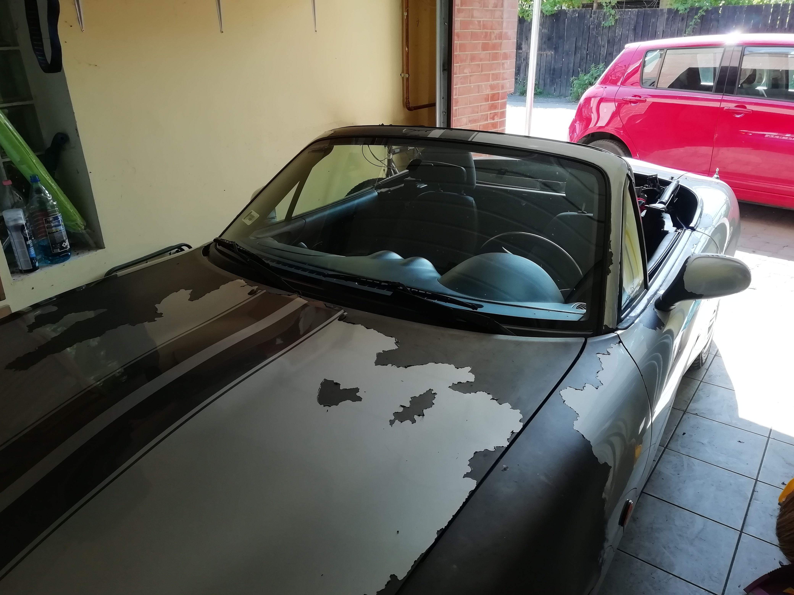
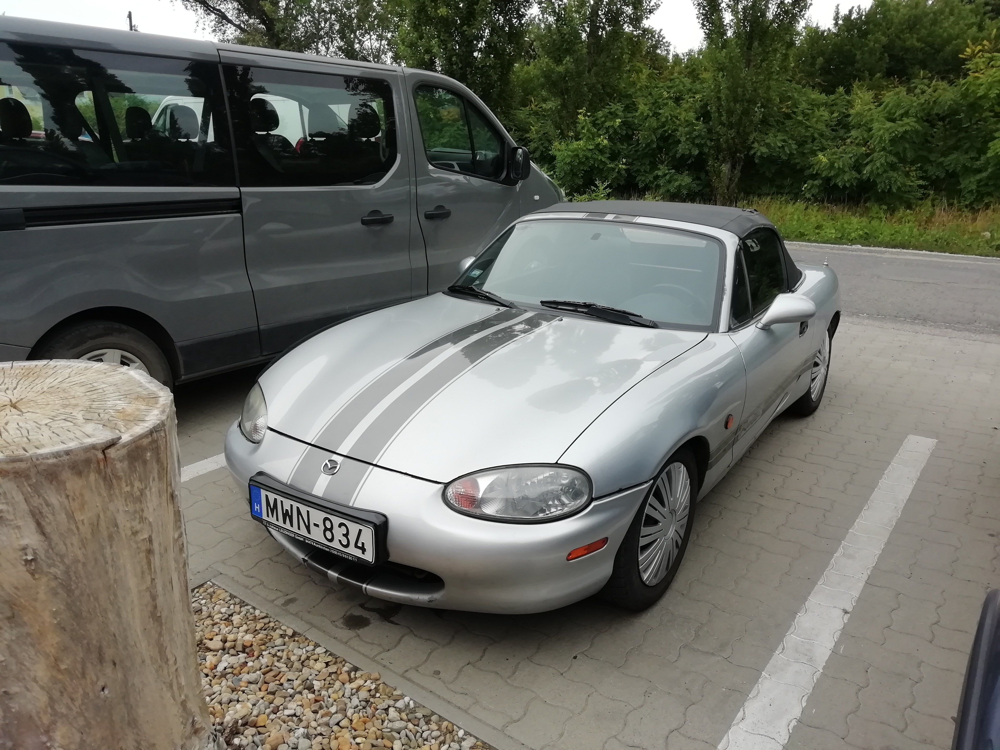
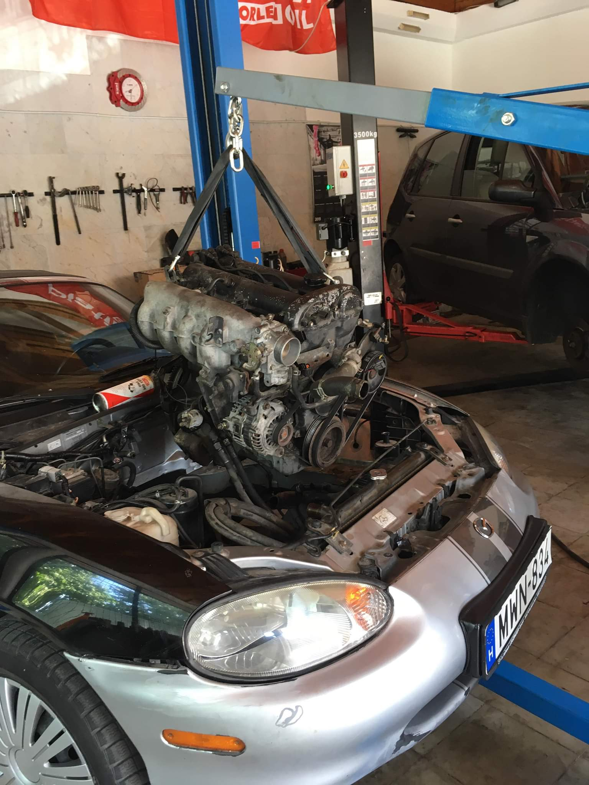
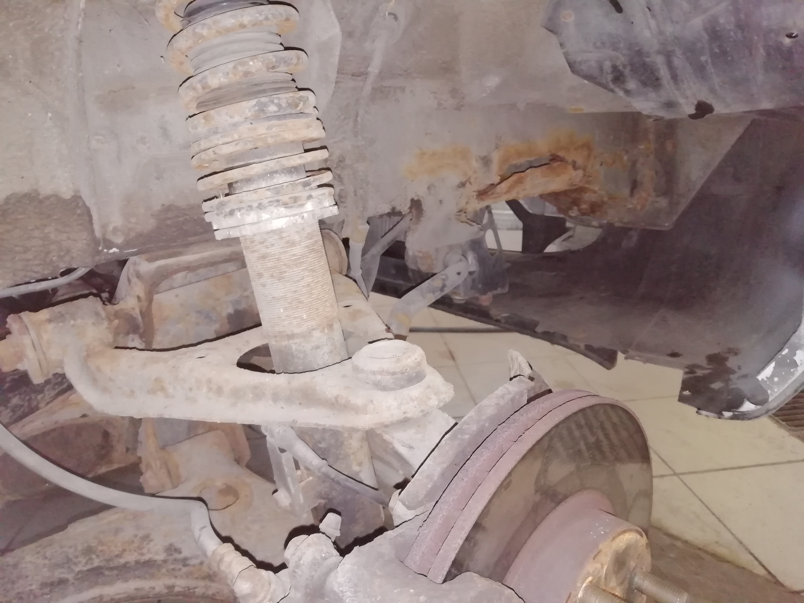
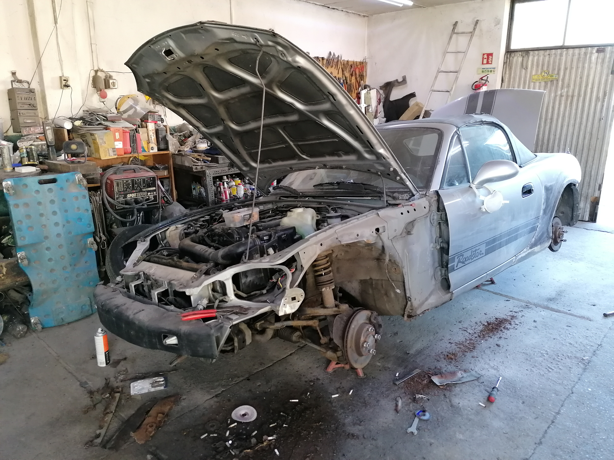
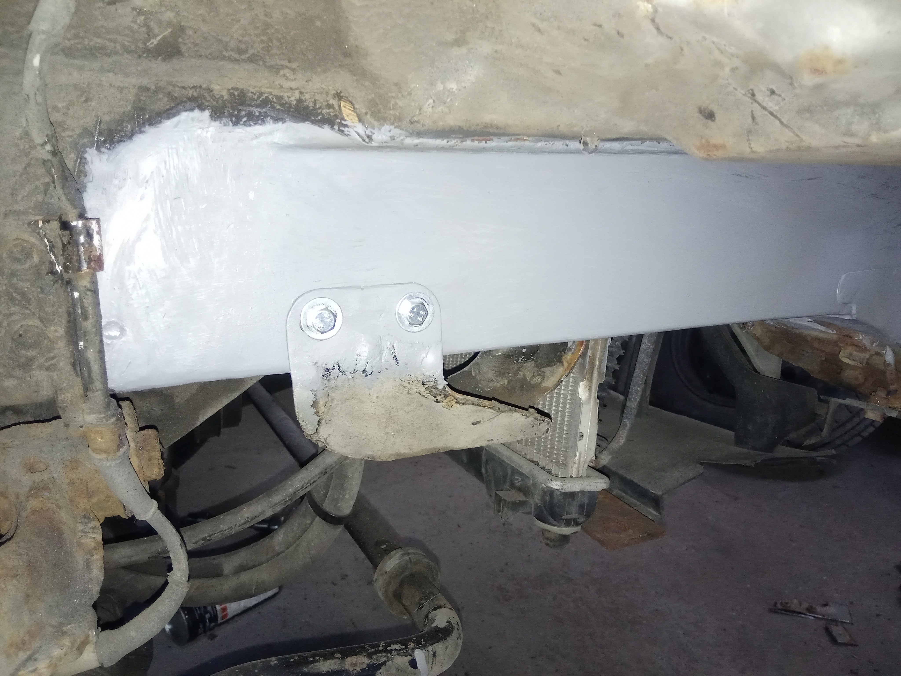

Az Mx5-ösöm felújítása
Egy 2000-es gyártású, 1,6-os, második generációs Miata felújításának fontosabb állomásait szeretném itt bemutatni.
|  | Ezt a képet az interneten találtam, még egy korábbi tulajdonosnál látható az autó, ereje teljében. (bal szélső) |
 |
A vásárlás után, úton hazafelé. A típus átlagos árához képest nagyon olcsón jutottam hozzá, de látszott hogy felújításra szorul. |
 |
Pár nappal később, egy teszkós dísztárcsa sokat dob a kinézetén, amíg nincs rendes alufelni hozzá. |
|  | Nekikezdtem a foszladozó plasti dip fólia eltávolításának, alatta viszonylag friss, de sérült fényezést találtam. |
|  | Már a fólia leszedése után, ebből a szögből egészen vállalhatóan nézett ki. |
|  | 2019 júlusában lett felújítva a motor, 280 ezer km után ráfért a csere a dugattyúgyűrűkre, szelepszárszimmeringekre, vezérműszíjra, és még sok apróságra. |
|  | Itt látható a típus gyenge pontja, az erősen korrodáló első váznyúlvány. Itt a karosszérián szerettek volna merevíteni a Japán mérnökök, ezért több réteg lemezt helyeztek el közel egymáshoz, de a bejutó nedvesség szinte mindegyik példányon hasonló sérülést okozott. |
|  | 2019 decemberében került el az autó karosszériáshoz, aki nekikezdett a rozsdás részek kijavításához. A kép 2020 márciusában készült, itt már itt már előrehaladottabb állapotban van a munka. |
|  | Például elkészült a váznyúlvány javítása is. |
Jelenleg már a festőnél van az autó, és ha minden jól halad júniusban újra az utakat rója.